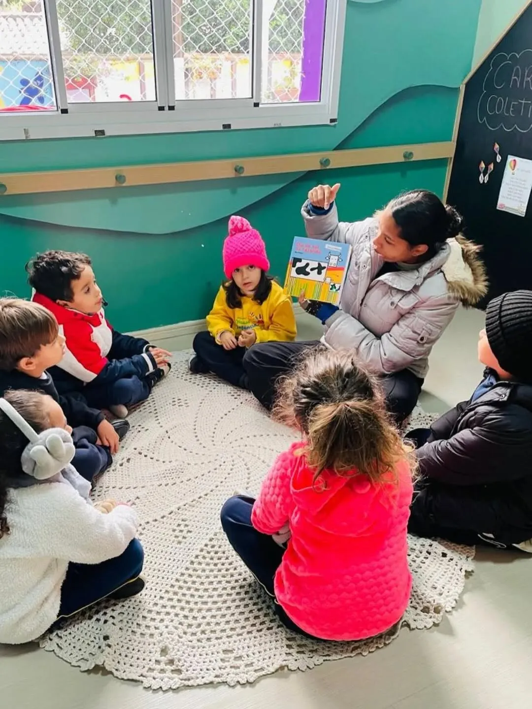
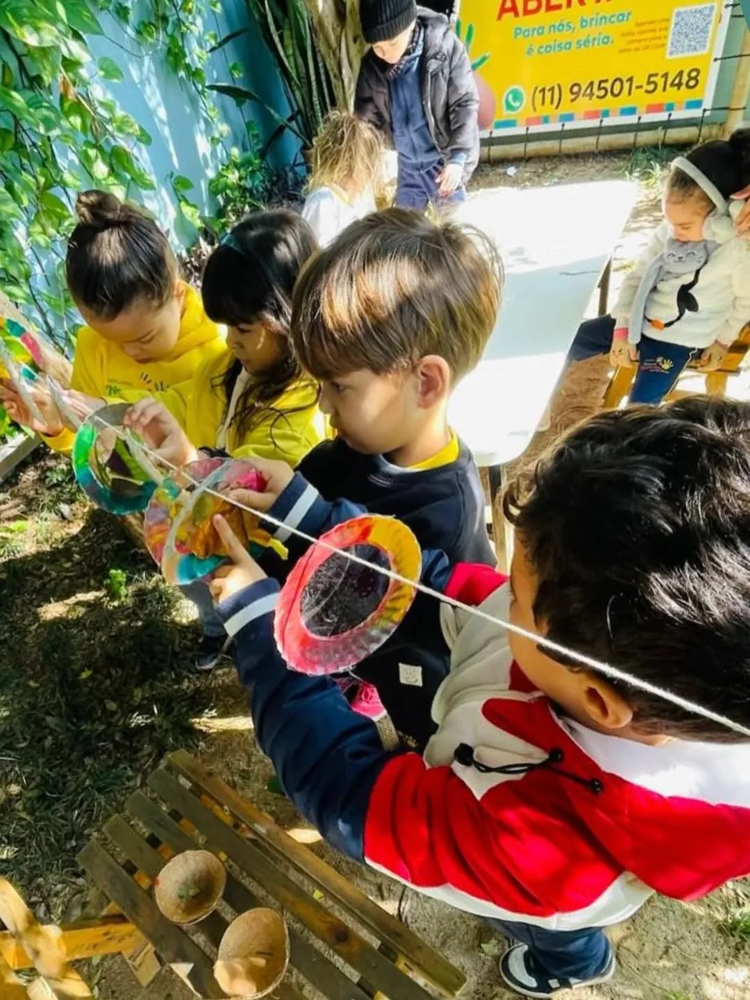
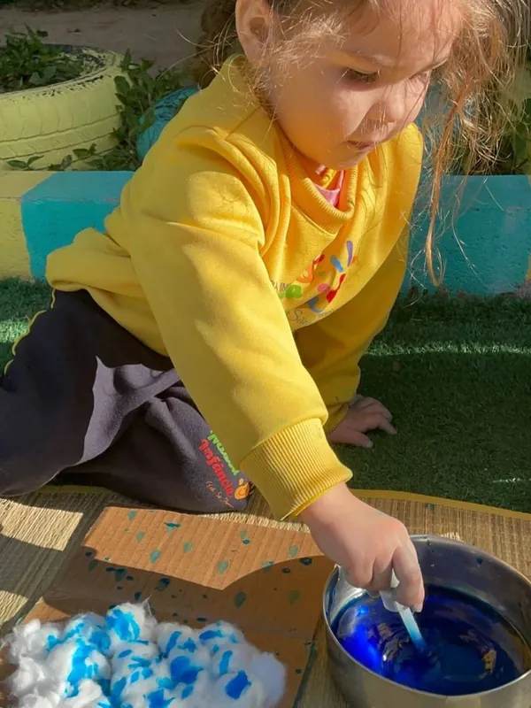
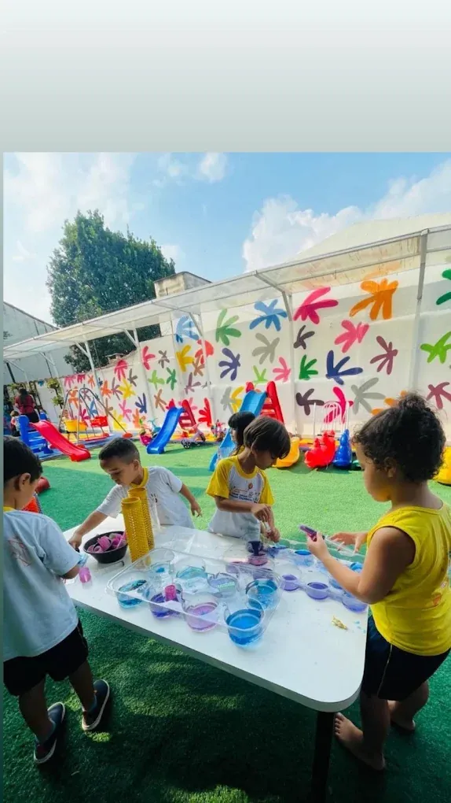
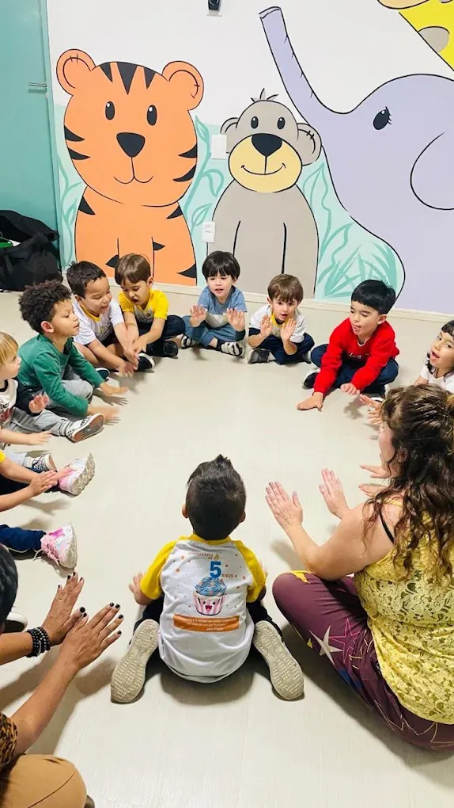
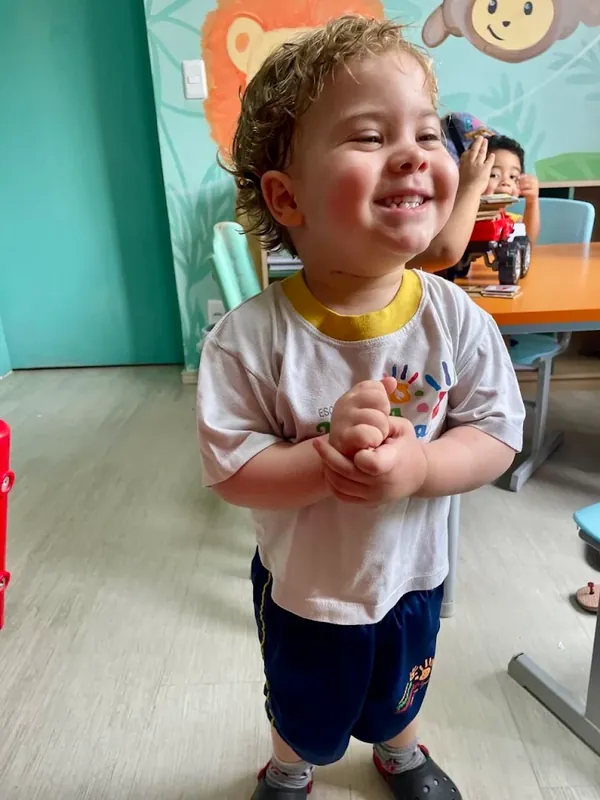
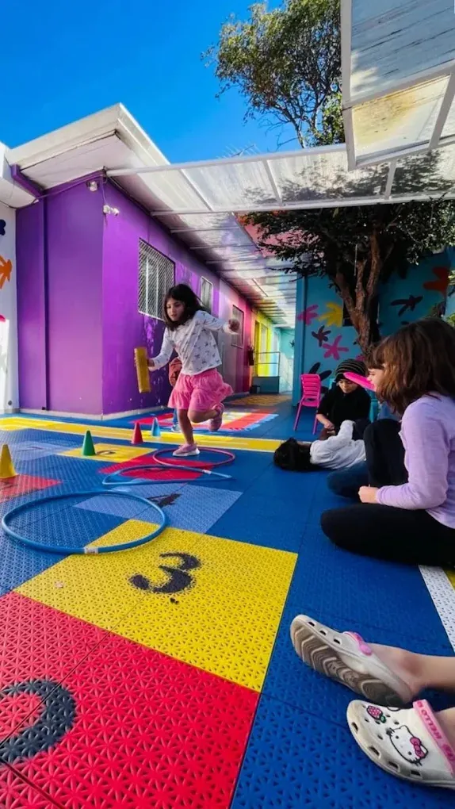
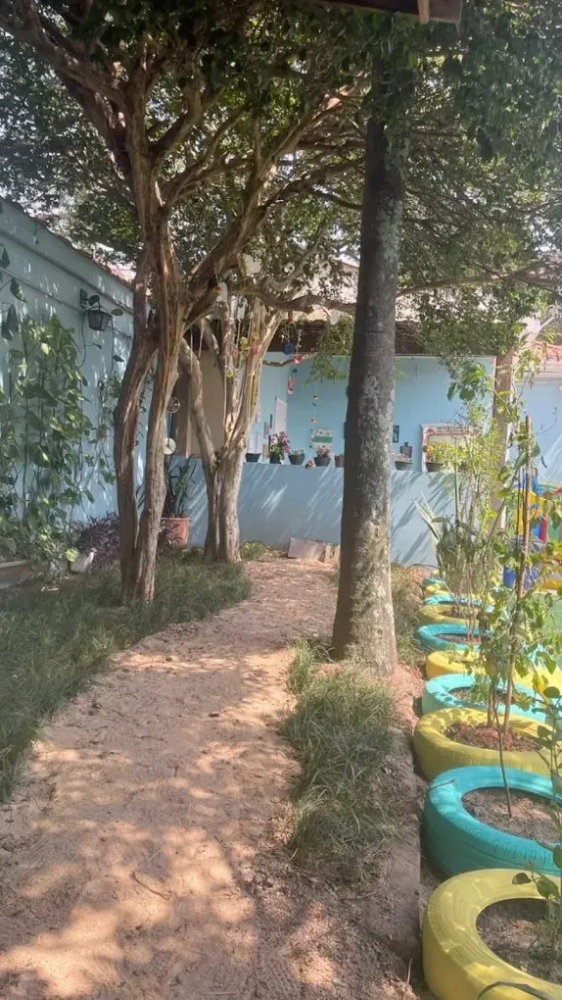

Escola infantil na Vila Yara, OsascoPara nós, brincar é coisa séria.
Do berçário ao pré, em período integral: de segunda a sexta, das 7h às 19h.
4,7 no Google, com 23 avaliações

Do berçário ao pré
Uma escola para acompanhar a criança desde os primeiros meses até a chegada ao ensino fundamental.
-
Berçário
Cuidado individual e rotina tranquila para os bebês, com atenção ao sono, à alimentação e aos primeiros estímulos.
Perguntar sobre berçário -
Maternal
Descobertas pelo brincar: linguagem, movimento, convivência e autonomia nas pequenas tarefas do dia a dia.
Perguntar sobre maternal -
Pré-escola
Preparação para o ensino fundamental com atividades lúdicas de linguagem, lógica, música e artes.
Perguntar sobre pré-escola -
Período integral
A escola funciona das 7h às 19h, de segunda a sexta.
Perguntar sobre período integral -
Alimentação
Refeições completas e saudáveis ao longo do dia.
Perguntar sobre alimentação -
Adaptação acompanhada
Nos primeiros dias, a família recebe notícias, fotos e vídeos de como a criança está.
Perguntar sobre adaptação acompanhada

Uma escola para ser criança
Na Nossa Infância, o aprendizado acontece brincando: no pátio, no jardim, nas rodas de leitura e de música. As famílias que já passaram por aqui falam de acolhimento, carinho e de filhos que querem ir para a escola.
A escola fica na Rua Victor Brecheret, 105, na Vila Yara, em Osasco (SP), e atende crianças do berçário à pré-escola, de segunda a sexta, das 7h às 19h.
- Aprender brincando, com música, imaginação e atividades de lógica
- Espaço amplo, com áreas ao ar livre e contato com a natureza
- Adaptação acompanhada, com fotos e vídeos para a família nos primeiros dias
- Alimentação completa e saudável ao longo do dia
Atividades da escola
- Inglês
- Ballet
- Culinária
- Robótica
- Judô
- Cross Kids
O dia a dia na Nossa Infância
Brincadeiras, experiências e descobertas, dentro e fora da sala.
-

Pintura com conta-gotas -

Experiências com água colorida -

Roda de música -

Alegria na sala -

Circuito no pátio -

Área verde da escola
O que as famílias dizem
Nota 4,7 no Google, com 23 avaliações
-
Escola fantástica. Recebeu meu filho muito bem, todos os dias durante a primeira semana de adaptação me mandaram fotos e vídeos de como ele estava, ele se adaptou super rápido e adoraaa ir pra escola. Minha família e eu somos muito gratos pelo carinho, atenção e respeito com o nosso filho.
Suellen Cristina -
…Meu filho, entrou com 2 anos e falava pouquíssimas palavras, mas com o tempo foi desenvolvendo e hoje virou um tagarela. Nós amamos o cuidado, a atenção e a estrutura da escola. Como pedagoga, preso muito por um ensino ativo, com muitas brincadeiras, música e imaginação e tudo isso a escola oferece.
Melissa Angelica -
A escola tem uma estrutura que favorece o contato com a natureza, brincadeiras de criança, é um encanto, como mãe o meu desejo sempre foi que minha filha tivesse este ambiente, aprender brincando, compatível com a idade. Profissionais atenciosos e cuidadosos, além de uma alimentação completa e saudável.
Fernanda Maeda -
A escola é tão boa, tão querida que minha filha chorou porque queria ir para escola. Com essa atitude dela, da para perceber que é um excelente ambiente, com muito cuidado e carinho, sem contar as várias atividades (o tanto que ela se desenvolve é muito perceptível), atividades de lógica, dia a dia e demais. Tudo muito leve, um ambiente acolhedor que facilita muito o aprendizado dela. Minha filha ama a escola e as professoras.
Camila Yonemoto
Venha conhecer a escola
Marque uma visita pelo WhatsApp para ver as salas e o pátio e tirar suas dúvidas.
Onde estamos
Escola Infantil Nossa Infância
Rua Victor Brecheret, 105 - Vila Yara, Osasco - SP, 06026-000
Horário de funcionamento
- Segunda a sexta
- 7h às 19h
- Sábado
- Fechado
- Domingo
- Fechado